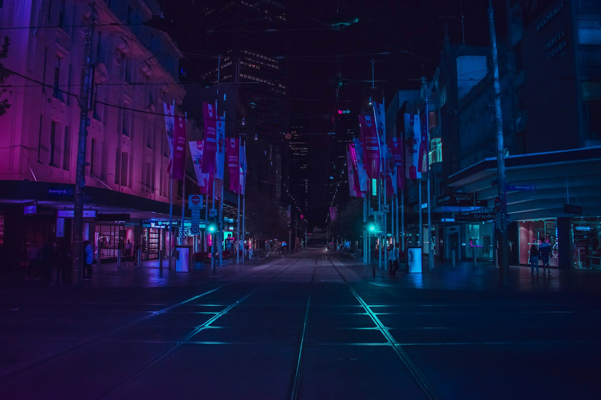

$ system.init() loading modules... [ ready ] $ build --release
01 / WEB DEMOLIVE
PNGID Demo
A deployed web demonstration. Access the live instance to inspect its current functionality.
Open deployment ↗SOFTWARE DEVELOPMENT
I'm Garry Bakat. I explore software engineering, Linux, system design, and practical tools that solve real problems.

PROJECT PORTFOLIO
Selected implementations, technical demonstrations, and development experiments.
$ system.init() loading modules... [ ready ] $ build --release
A deployed web demonstration. Access the live instance to inspect its current functionality.
Open deployment ↗Try a JSON formatter, insertion-sort visualizer, and colour generator directly in the browser.
Open playground ↓A responsive web application implementing theme persistence, terminal simulation, and client-side utilities.
Technical overview ↓TECHNICAL DEMONSTRATIONS
Client-side demonstrations of data processing, algorithms, and interface behaviour.
A browser-based command simulator. Enter help to inspect supported commands.
Garry's web terminal [Version 1.0]
Type help to list available commands.
Validate JSON syntax and produce formatted or minified output.
Formatted output will appear here.
Visualise insertion sort through sequential array operations.
Ready.
Select a colour and retrieve its hexadecimal representation.
#E5484D
PROFILE
I'm interested in how software works beneath the surface: how components connect, where systems fail, and how they can become more reliable.
My learning focuses on programming, Linux environments, software architecture, and turning ideas into working prototypes. This portfolio is a place to share experiments and demonstrate what I can build.
Implementation and testing
Fundamental technical knowledge
Verification and iteration
CONTACT
For technical enquiries, project proposals, or professional collaboration, contact me directly.
Available by email or phone.